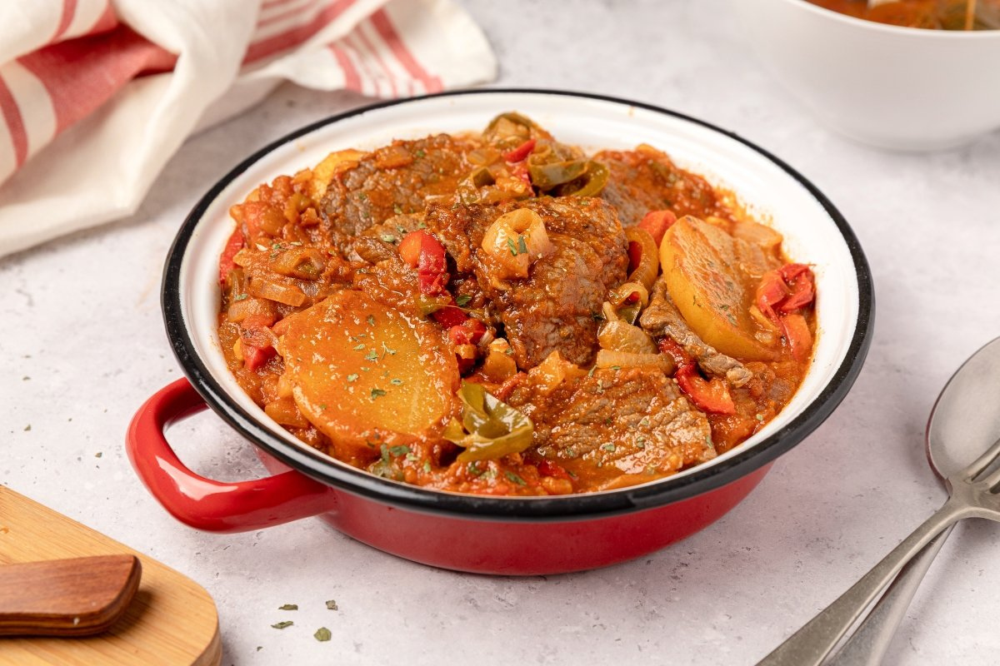

Para 4 personas:
Calentar aceite en una holla o sarten profunda, dorar los bifes durante 1-2 minutos por lados, una vez que esten, retiralos y reservalos
En la misma olla, agregar la cebolla, pimiento y el ajo, se cocinan durante 4-5 minutos hasta que esten blandos. Luego incorporar el pure de tomate, pimenton, sal y pimienta
Una vez que esten listas las verduras se incorporan de nuevo lso bifes, agregar un poco de agua y luego las papas
Colocar la tapa y dejar cocinar a fuego bajo durante 35-40min hasta que esten blanda las papas
Apaga el fuego y deja reposar durante 5 minutos antes de servir.